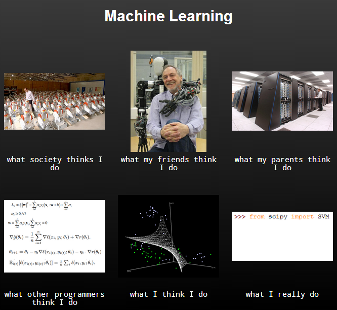
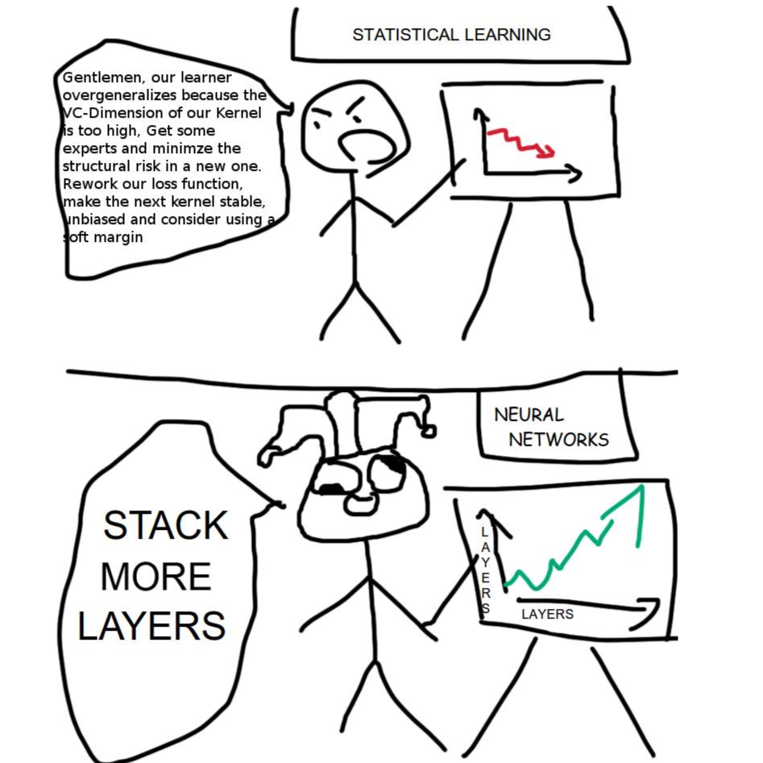

Day 10 - Practical ML and wrap up
Posted on June 9, 2017
by Govind Gopakumar
Prelude
Announcements
- Tutorial on PCA up
- Datasets have been uploaded
- Tutorial on AdaBoost up
Recap
Features in Images
- Basic image features
- Edges, shapes
- Learning them (high level overview)
Features in Text
- Basic text level features
- Converting a sentence / document to a vector
- Converting words to vectors (high level overview)
Performance measures
Learning with imbalanced data - I
What’s the issue?
- Algorithms measure loss
- Depends implicitly on the balance of data
- Example of this?
How do we ignore this?
- Classifier performs reasonably well!
- 99% accuracy. But what is the actual accuracy?
Learning with imbalanced data - II
Modify the loss function
- Look carefully at the loss, add weight to smaller set
- Penalize making mistakes more on smaller class
Examples?
- Perceptron loss : Increase \(\eta\), maybe?
- Pairwise losses?
Learning with imbalanced data - III
Subsample data
- Drop a lot of positive examples
- Train multiple times, but with equal positive and negative?
Oversample data
- Copy negative examples!
- Care must be taken, think carefully about the algorithm!
Cross validation
How do we choose the right model? - I
Importance of cross validation
- Train on training data set
- Test on testing data set
- But choosing model? - validation set!
Validation
- General idea : leave some data out for “testing” before testing!
- Multiple versions of cross validation
How do we choose the right model? - II
Held out data
- Set aside some part of the training data
- Test multiple models on this “held out” dataset
- Choose best performing model!
Specific types
- K-fold : Create K splits
- LOO : Leave aside 1 example
- Random subsample : Choose random subset as validation
Heuristics to help
Bias Variance tradeoff - I
What are these terms?
- Bias : How inherently weak / strong your model is
- Variance : How unstable / stable your model is with data
How are they important?
- Bias : You might be underfitting!
- Variance : You might be overfitting!
Bias Variance tradeoff - II
In practice
- Decreasing bias (increase complexity) : probably increase variance!
- Decreasing variance : might increase bias!
Choose appropriate models
- Plot training error, validation error, test error
- Understand complexity of data vs model!
Debugging algorithms
More data vs Richer model
- Data can’t decrease bias, but can decrease variance
- Model can’t decrease variance generally, but can decrease bias!
Questions to ask
- Is the optimization not being done properly?
- Is the model appropriate?
- Is the data too simple or too complex?
Cheat sheet

Scikit Learn cheat sheet
Course review
Some that were covered
Learning
- KNN, Decision Trees
- Linear Regression, Matrix Factorization
- Logistic Regression, Perceptron
- Multilayer Perceptrons, Neural Networks
- Clustering, Dimensionality Reduction
Misc
- Extracting from images, text
- Combining models
Some that couldn’t be covered
- Semi Supervised Learning : Training examples may all not have labels
- Reinforcement Learning : Action - reward model
- Online Learning : Continuously predict / obtain loss
- Time series : Modelling time varying data like stock prices
Conclusion
Course objectives - I
- Understand basic tools in Machine Learning
- Recognize the need and suitability of models
- Be able to apply basic techniques and get reasonable results
- Have enough background to explore advanced methods, maybe research
- Read articles about the dangers of AI in newspapers and understand why they’re (probably) wrong.
Course objectives - II

What ML is
Hopeful takeaways - I
Model geometry and intuition
- Try to explore data and see how it “lies”
- Understand limitations and powers of each model
- Come up with good “features”, try various techniques
Modelling choies
- Understand when more power is necessary and when not
- Not blindly apply powerful tools (basically neural networks)
Hopeful takeaways - II

Somewhere between the two
Wrapping up
Notes
- Website will remain up (govg.github.io/acass)
- Programming resources will be completed by weekend
- Not sure if a quiz is needed?
- Post course feedback form up (please let me know)
- Projects (please continue till you get a “feel” for your data)
- Contact for any query (govindg@cse.iitk.ac.in)
Thank you!

“Data Science”
References
Acknowledgements
- Pic 1 : Scikit learn documentation
- Pic 2 : Unknown User on Pinterest
- Pic 3 : Reddit /r/machinelearning
- Pic 4 : XKCD.com